Gallery
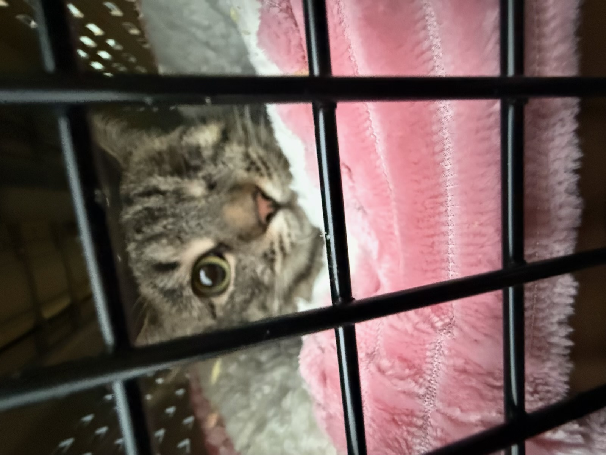
Picked up from shelter — scared and withdrawn
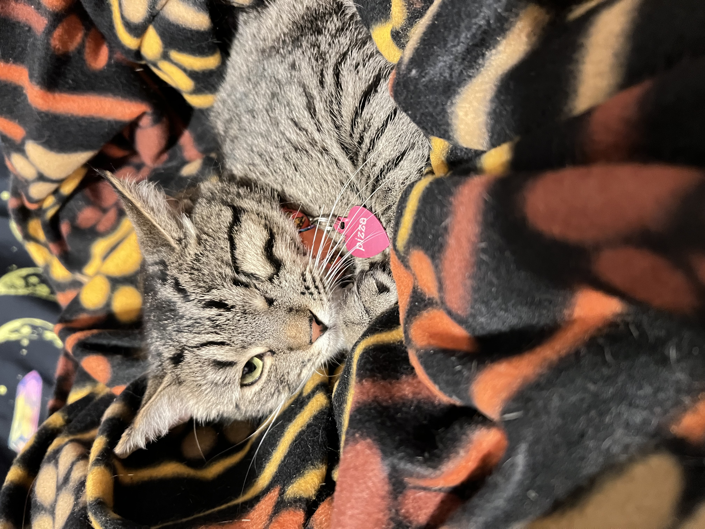
Mostly hiding and avoiding contact
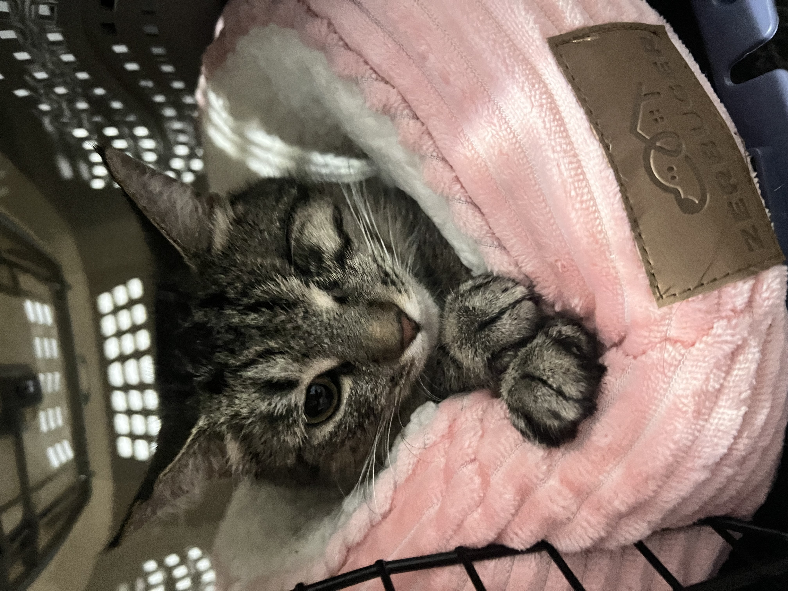
Still unsure of human presence
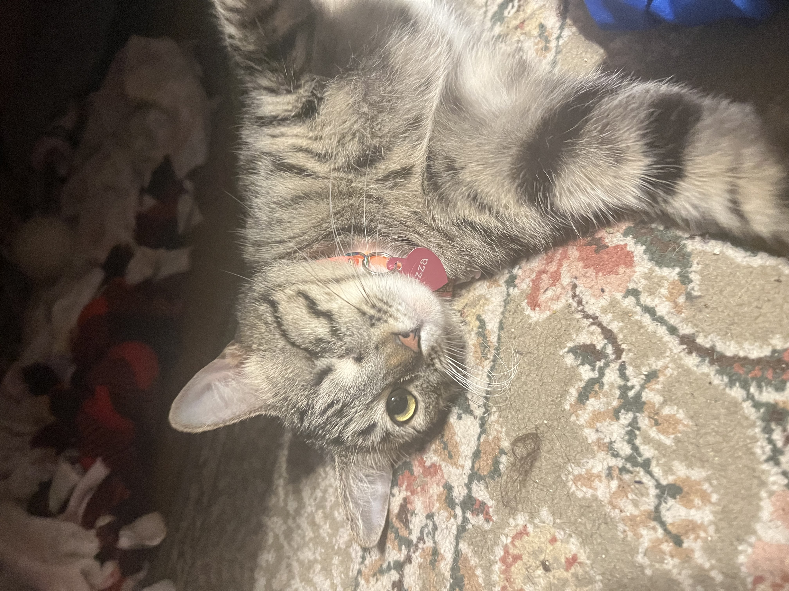
Starting to observe instead of hide
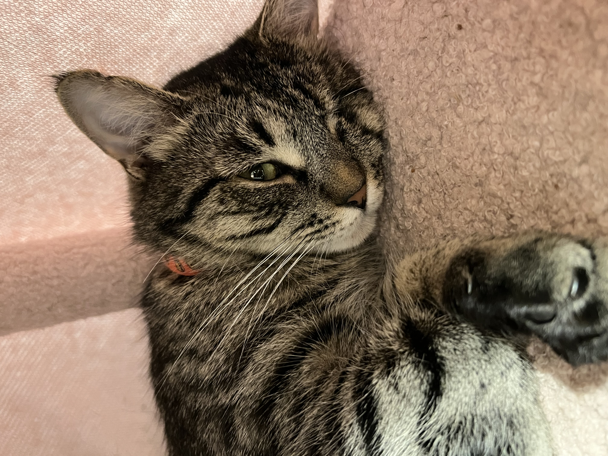
Less reactive to movement and noise
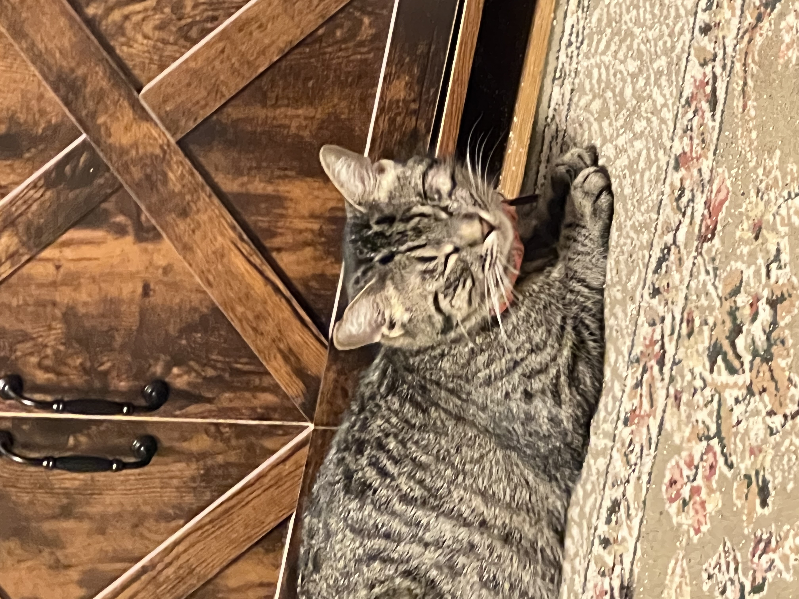
Beginning to stay in open spaces
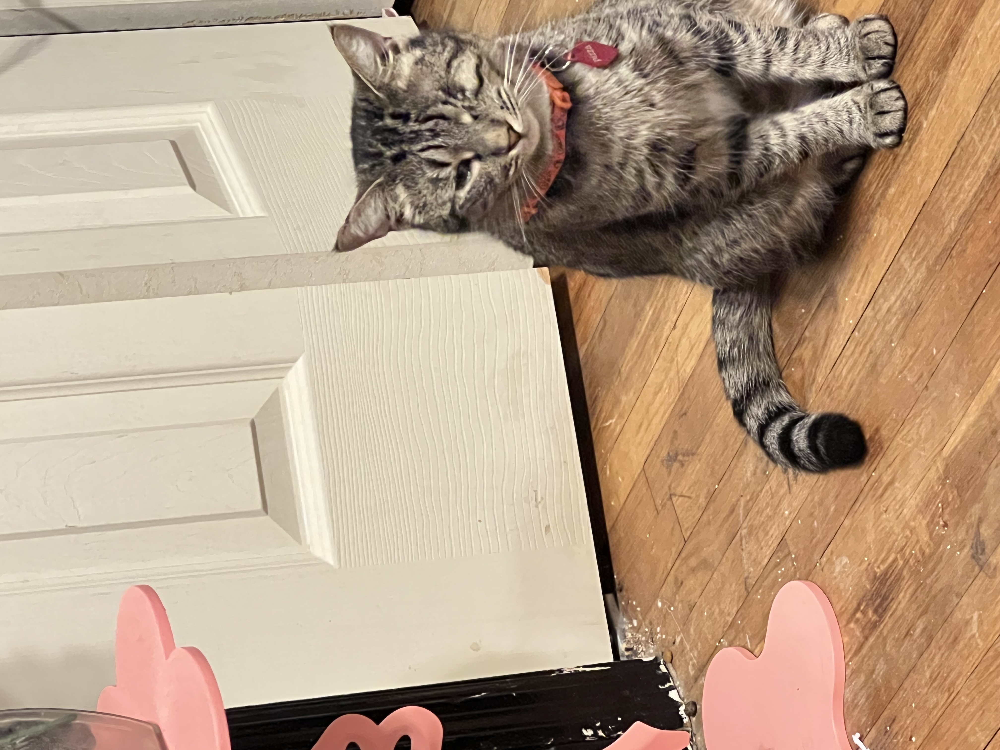
Accepting presence at a distance
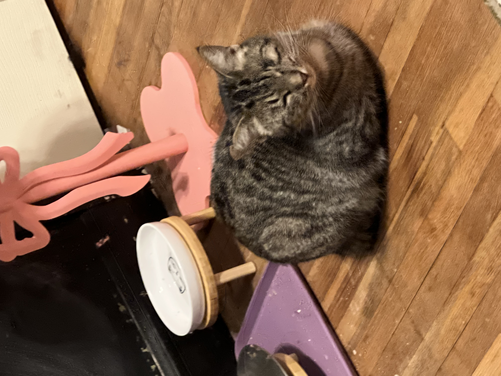
Comfortable near familiar routines
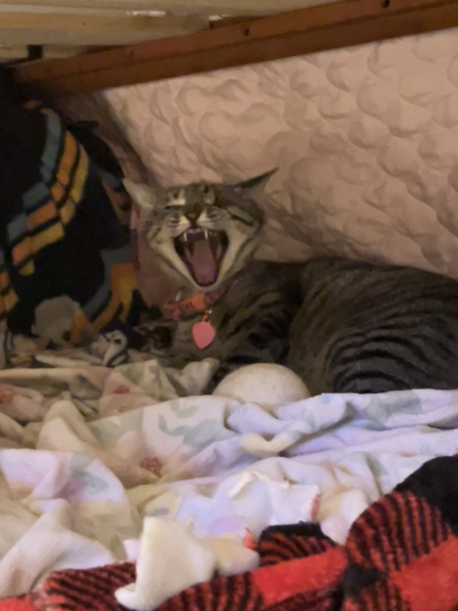
Showing calm behavior around people
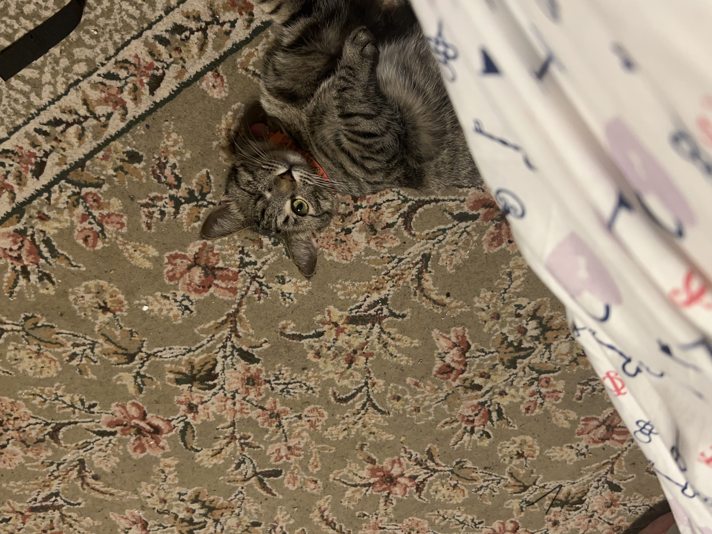
Relaxed and no longer hiding
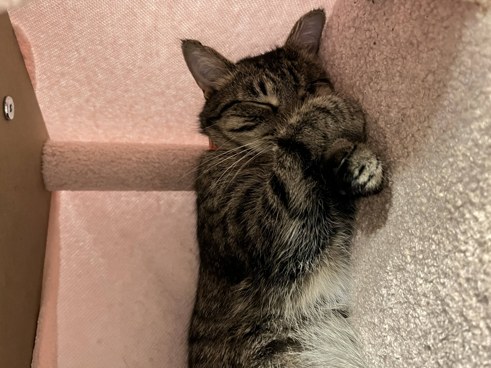
Trusting environment and routine
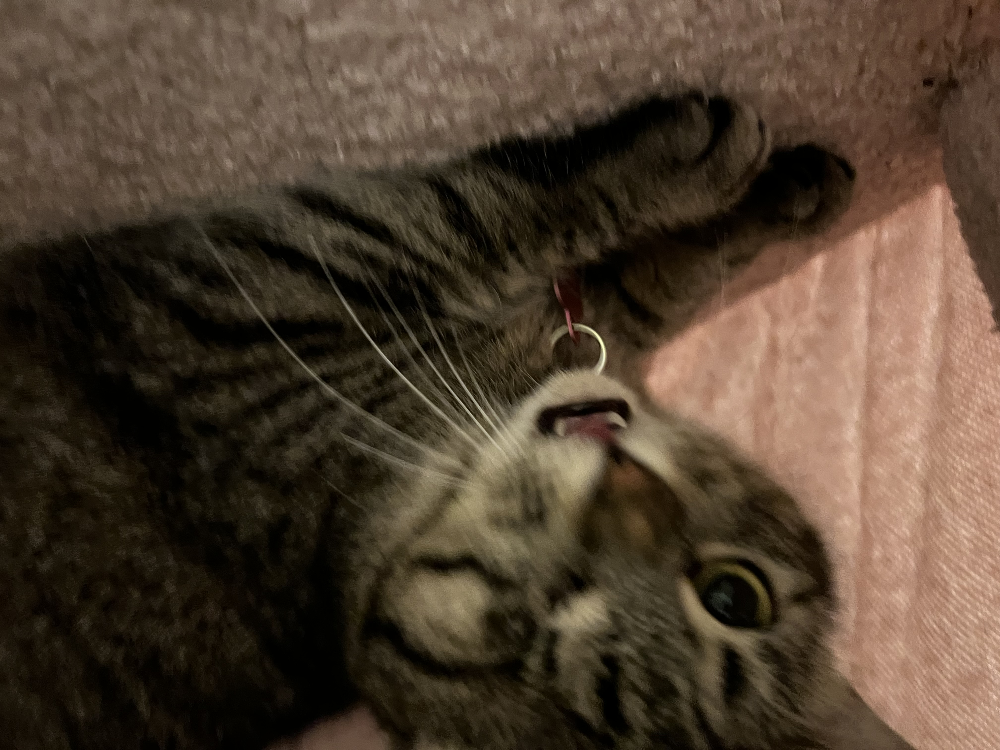
Fully adjusted to indoor life
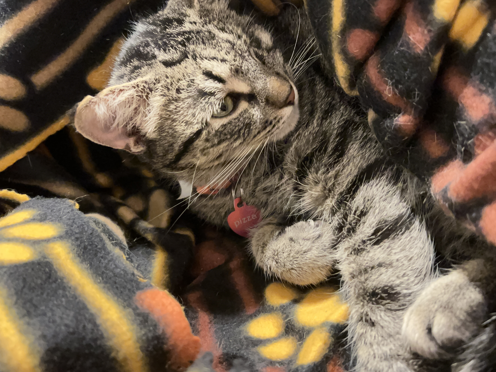
Comfortable resting in open spaces
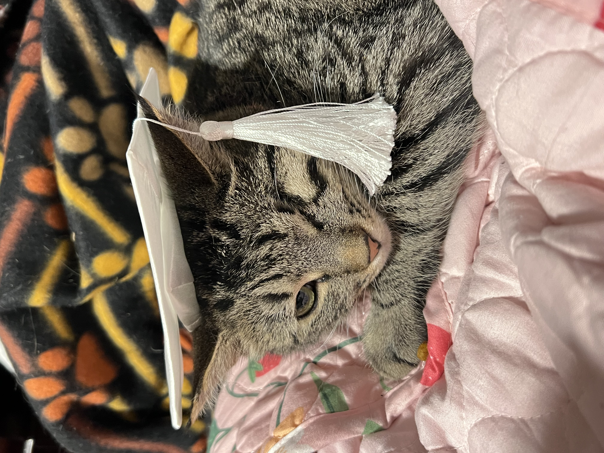
Seeks attention on her own terms
Safe, stable, and at home